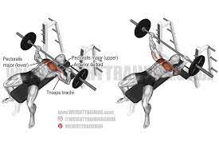
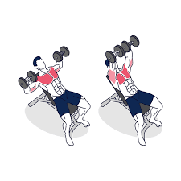

Workout Day 1: Legs

Calf Raises 3 Sets of 10: these are a great and easy way to work the calf muscles. Start by selecting the appropriate weight (Lighter is better until you're more comfortable). Line up the balls of your feet and your shoulders to the pads. When ready press down on the pad with the balls of your feet and push upward
Goblet Squats 3 sets of 10 - Hold a kettlebell in both hands at your chest, gripping the handles as though you were cupping a goblet—one hand on either side of the handles. Press your hips back and begin bending your knees to perform the squat. Press through your heels and reverse the motion to return to the starting position.
Hamstring Curls 3 Sets of 10 - another great movement to help strengthen the hamstrings. Start by adjusting to the desired weight. Lay on your back and place legs hanging down. Push the bar up and repeat.

Leg Press 3 sets of 10 - targets the quadriceps and glutes. Adjust the chair so that it leaves a slight bend from the knees. Adjust the weight and then push with your legs, making sure to keep the torso rigid.
Barbell Squats 3 sets of 10 -Stand with your feet more than shoulder-width apart. Hold a barbell across your upper back with an overhand grip. Take the weight of the bar and slowly squat down head up, back straight, buns out. Lower yourself until your hips are aligned with your knees, with legs at 90 degrees
Tip: Avoid resting it on your neck as this can cause discomfort and pain in the neck area. Hug the bar into your traps to engage your upper back muscles.
Workout Day 2: Back
Front Lat Pulldown 3 sets of 10 - this motion is great for working the lower back. Start by adjusting the weight to the desired amount. Then grip the bar with both hands and pull the bar down focusing on contracting the back muscles

Rows 3 Sets of 10 - another great motion designated for the lower back. Grab the handle with both hands and sit in a position where your knees are slightly bent. Pull back with both hands and return to normal position
One Arm Dumbbell Rows 3 Sets of 10 - These help to isolate the back muscles on either side. Grab a dumbell and using a bench to remain in a bent over position. Lift the dumbell up towards the chest and then back down
Dumbbell Shoulder Shrugs 3 sets of 10 - Hold the dumbbells at your side. Raise your shoulders as high as possible by contracting your trap muscles.
T-Bar Rows 3 sets of 10 - Place the end of an empty barbell into the corner of a room. Rest a heavy dumbbell or some weight plates on it to hold it down. Load the opposite end of the bar with plates and straddle it. Bend over at the hips until your torso is about a 45-degree angle to the floor with arms extended. Keeping your lower back in its natural arch, squeeze your shoulder blades together and pull the bar until the plates touch your chest.
T Bar Help: T Bar Rows
Workout Day 3: Shoulder

Face Pulls 3 sets of 10 - a great movement to target the shoulders and help improve both strengh and stability. Using the rope attachment(see image), grab both ends and pull towards the crown of your head.
Overhead Press 3 sets of 10 - Load a barbell with the approproate weight. Grabbing the barbell, push up similar to the dumbbell motion
Overhead Press tips: Overhead Press
Arnold Press 3 sets of 10 - Grab a set of dumbbells. Hold them in a reverse grip and then push up, switching form a reverse grip to a normal grip.
Arnold Press tips: Arnold Press
Front Shoulder Raises 3 Sets of 10 - Hold the dumbbells in front of your thighs. This will be the starting position. Raise them up again to the front, then down to the starting position.

Lateral Raises 3 sets of 10 - For these you will start the same way you started the Front Raises. Start by raising the dumbbells forward, then out to the sides, then bring them down to the side.
Workout Day 4: Chest
Pec Deck/Fly 3 sets of 10 - Grab the handles so that your palms are facing forward. Press your arms together in front of your chest with a slow, controlled movement. Bring the arms slwoly back to the starting position
Barbell Press 3 Sets of 10 - Grab a barbell and load it with weight. Lay down and grab the bar with both hands. Push the bar up and back down close to the chest.
Bench Help: Bench Press
Incline Dumbell Press 3 Sets of 10 - This is a variation of the of the dumbbell press meant to work the upper chest. Raise the bench you previously used until its on an incline. Follow the same motion as before focusing on the contraction of the upper chest.
High Cable Chest Fly 3 Sets of 10 - Place the cable fly handles on the highest notches. Take a handle in each hand. Step out with your right foot forward so that your feet are in a staggered stance. With your elbows slightly bent pull the handles forward and together meeting in the center of your chest.
Tips for High Cable Chest Fly: High Chest
Standing Cable Lower Fly 3 sets of 10 - To perform this exercise, bring down the pulleys to the bottom of the machine. Stand in the center of the machine and grip the handles to bring them up until your hands are joined in the front of your chest.
Tips for Low Cable Chest Fly: Low Chest
Workout Day 5: Biceps/Triceps
Tricep Cable Pushdown 3 sets of 10 - with a rope attachment, grab it with both hands. Push down until your elbows are fully extended but not yet in the straight, locked position. Keep your elbows close to your body and bend your knees slightly on the pushdown. Return to the rest position

Tricep Kickbacks 3 Sets of 10 - Hold a dumbbell in each hand with your palms facing in toward each other, keeping your knees bent slightly. On an exhale, engage your triceps by straightening your elbows. Hold your upper arms still, only moving your forearms during this movement.

Reverse Tricep Pushdowns 3 sets of 10 - Start by setting a bar attachment high on a pulley machine. Facing the bar attachment, grab it with the palms facing up (supinated grip) at shoulder width. Lower the bar by using your lats until your arms are fully extended by your sides. Slowly elevate the bar attachment up as you inhale so it is aligned with your chest. Only the forearms should move and the elbows/upper arms should be stationary by your side at all times.
Tips on Reverse Tricep Pushdowns: Tricep Pushdown
Bicep Curls 3 Sets of 10 - Hold a pair of dumbbells in each hand. Keeping your upper arms stable and shoulders relaxed, bend at the elbow and lift the weights so that the dumbbells approach your shoulders. Your elbows should stay tucked in close to your ribs.
Incline Barbell Curls 3 sets of 10 - Using a bench, hold your dumbbells in each hand. Let your arms rest over both sides so that they hang. In that position, bring the barbell up focusing on the bicep.

Hammer Curls 3 Sets of 10 - Hold on to the same pair of dumbbells. Bend at the elbow, lifting the lower arms to pull the weights toward the shoulders. Your upper arms are stationary and the wrists are in line with the forearms. Return to the starting position and repeat
Cardio:
Cardio can be a great asset for any workout as it aids in blood circulation and calorie burning. If you desire to add cardio to your workout here are some suggestions.
- Treadmill 4-5 speed for 20 minutes
- Bike 20 minutes
- Eliptical 20 minutes
- StairMaster 15 minutes